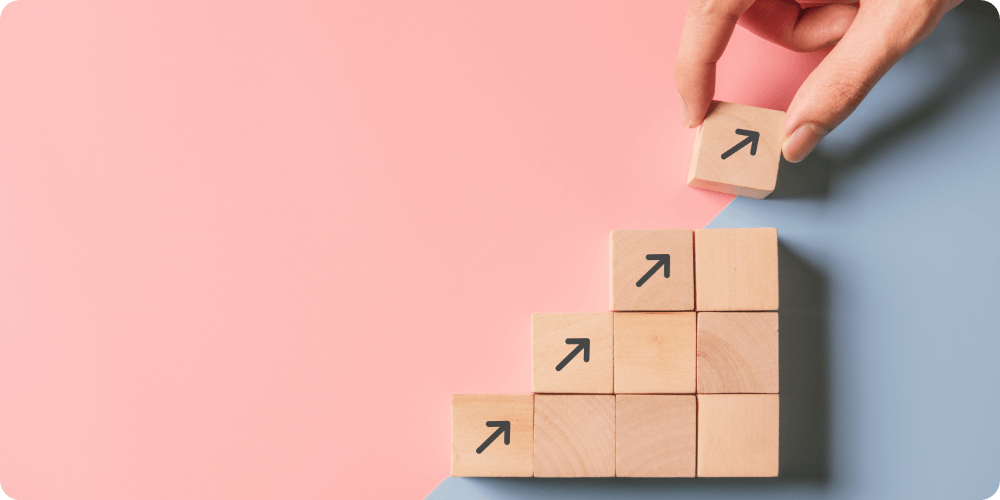

ワーク回答に
ログインはいりますか？
昨日の配信で開催決定をお伝えした
「赤ちゃん肌部パーフェクト」。
参加した部員さんからの
満足度を調査した結果をお伝えします。
累計の参加人数：308人
「効果を実感した」と答えた人：289人
効果を感じた割合：94％
「取り組みやすい」と感じた人：277人
取り組みやすいと感じた割合：90.2%
「有料の価値がある」と感じた人：283人
有料の価値を感じた人の割合：92%
そんな驚異の満足度を得る
サポート企画を始動します！
せっかくシルバープランとして
赤ちゃん肌部に入部したのに
LINEでわからないことを聞けないせいで
今のケアに自信を持てない…
お肌の悩みを話せる人なんて
身近には誰もいないのに
RUIさんとも話せなくて心細い…
なぜかニキビができてしまったけど
原因がわからない…
私の何がいけなかったのかな？
私ももっと劇的に
綺麗な肌へと変わりたい。
シルバープランの方の中で
こういったお声を
ほんの一部いただいていました。
たとえサポートできない
プランだとしても
こうしてついてきてくれた
部員さんのことは
最後まで責任を持って
理想の肌にまで導きたい。
何かできないかな。
私にできることって、絶対にあるよな。
ずっとそう考えていました。
そう確信していたからこそ
この企画に踏み切りました。
私があなたを
もっと綺麗な肌に導ける
自信があるんです。
ここまで強気であなたに伝えるのは
なんでかわかりますか？
なぜなら、
肌荒れを克服することで
毎日の充実度が変わることを
私自身が経験したからです。
友達や好きな人から
「肌綺麗だよね」
と言われるだけで、
これ以上の褒め言葉って
ないじゃないですか。
自分が「肌が綺麗な人」
の枠に入っていることが
信じられないけれど
すごく幸せだと思ったし、
鏡を見るたびに
「私ってこんなに肌綺麗だったっけ…？」
と毎回感動できたのも、
あの時諦めずに
努力し続けた自分がいるから。
「人は変われる」
この言葉を実感して
どんなにきついことがあっても
諦めない前向きな
自分になれたんです。
そして何より
肌が汚かった頃には全くなかった
女性としての自信をつかめた。
それからは
オシャレやメイク、ショッピングなど
いろんなことが楽しくなって
世界が変わりました。
だから、今ここで
本当になりたい自分になるまで
諦めないでほしい。
最後のゴールまで
私があなたを導きたい。

そう私は強く思いました。
最初は私の友達を
ニキビだらけの肌から
救ったことから始まりました。
その友達からの嬉しくてたまらない声や、
感謝の言葉などをもらった時
私でも一人の女性を救えた、
一人の女性の未来を変えた、
初めての経験に
言葉にできないほどの嬉しさが
こみ上げました。
こういう嬉しさを
仕事としてやっていきたい、
ずっと活動していきたい、
そう思うようになり
この活動をはじめました。
その仕事の一つとして、
当時の私のように悩んでいる人たちを
救うためのコミュニティを作りたい。
正しい美容の知識を
もっともっと世の中に広めて
発信していきたい。
そんな夢がかなう場、
「赤ちゃん肌部」を
日本一大きな美肌部活として
広げていくのが夢となりました。
そのためには
実績を重ねることが必要不可欠です。
たとえ金額の問題で
上のプランに手が届かなくても
シルバープランでも
全員赤ちゃん肌になってほしい。
そしてより良いプログラムにしていき
最高の形にしていきたい、
そう思っています。
でも、私ばかり
赤ちゃん肌部の理想を追い求め
突っ走っても、意味がありません。
あなた自身が
美肌になれた先に
どうなりたいのか。
明確にして初めて
私があなたを
理想の状態に連れて行けます。

あなたはいきたい場所を決めないまま
飛行機に乗りますか？
電車、バス、なんだってそうです。
目的の決まってないまま
乗客に乗っていただいたとしても
いきたい場所に連れていくことは難しい。
お肌も同じです。
最初はただ肌が綺麗になればいい、
そう思っても
あれ、私は肌が綺麗になって
何がしたいんだったっけ？
なんのために頑張ってるんだっけ？
そう思うようになってしまいます。
そんな事態だけは防ぎましょう。
肌が綺麗になった先のゴールを
明確に決めるのがマストです。
ではここで
私からあなたに向けて
RUIワークday２を出します。
ワーク回答してくださった方には
先日お渡しした美肌テキストの続編を
お渡しします！
では、ワーク内容の前に
次回予告をさせてください。
次回予告
今回の配信で、
「あなた自身がなりたい自分」を
ゴールとして立てる大切さを
感じてくれたと思います。
あとはそのゴールに向かって
全力で努力するだけ。
次回は、そんな理想の肌に
最速でたどり着くために重要なことを
お伝えします。
RUIワーク２
あなたがこの
「赤ちゃん肌部パーフェクト」で
私のサポートを活用することで
どんなお肌になりたいか
そしてその先の最終ゴールとして
どんなことを達成したいか。
そんな密かに思うゴール地点を
私に教えてください。
一緒にゴールを共有してほしいです。
（回答画面に飛びます）
ワーク回答してくださったら
お返事として
LINEからテキストをお渡しします！
第2章
無意識のうちにやっているかも
ニキビNGケア
あなたが普段何気なくやっている
日常の行動が
実はお肌を痛めつける
NG行動の可能性が。
そのまま放っていては
どんな効果的なスキンケアをしても
ニキビは治りません。
まずは無意識に
お肌に罪深い行動をしていないか
自覚することから始めましょう。
ワーク回答について
よくある質問
ログインなど一切無しで
ご回答いただけます。
通信量は大きいですか？
ほとんどかからないので
お気軽にクリックください。
ワーク回答したら
どこからテキストを
見ることができますか？
ワーク回答を完了すると、
すぐにLINEでテキストを
お送りいたします！
回答が終わったら、
回答画面を閉じて
LINEトークからテキストが
送られていることを
ご確認ください。
追加で回答したいことが
あったんですが、
２回回答しても良いですか？
回答はお一人様１回まで
でお願いします！
ブラウザを変えて回答すると、
確認が取れずテキストを
お渡しすることができません。
必ずLINEアプリから移動せずに
ご回答をお願いします。
回答が難しいです。
ひとことでもいいので、
お気軽に送信してください！
内容によってテキストを
受け取られなくなることは
決してありません！
あなたの回答を待っています。
RUI